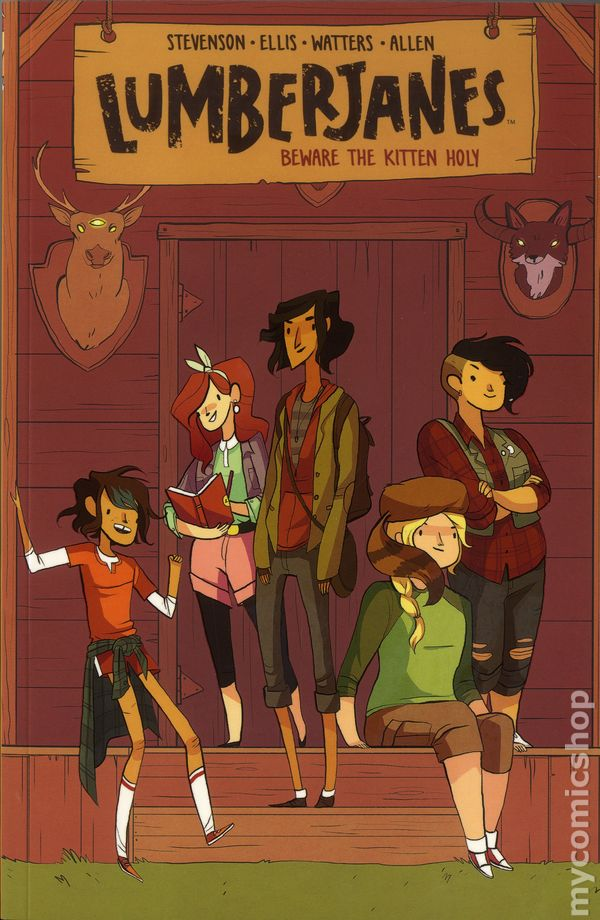

Cartoons and Graphic novels
Back
A lot of people think cartoons and comics are for little kids, which isn't always fair. I've been a fan of them since I was a little kid. I love graphic novels that have a fantasy/adventure story to them, especially ones that span over the course of many books like Scott Pilgrim and Lumberjanes. As for cartoons, I love anything that makes me laugh that can also keep me invested like The Owl House and Inside Job.

